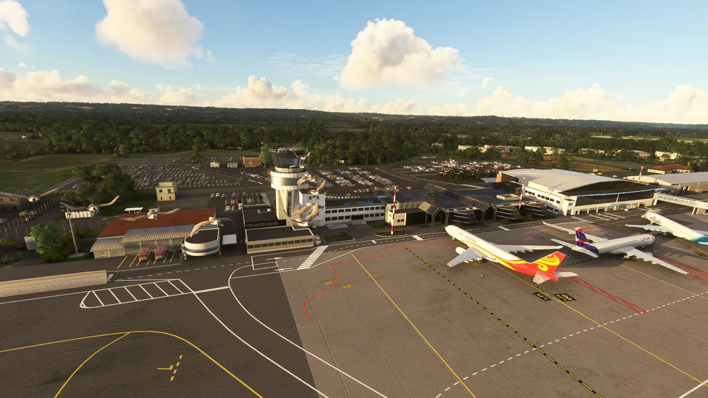

RK1 Kavik River Camp
A gravel strip and a camp of containers north of the Arctic Circle. There is no architecture to hide behind here: every prop has to sit exactly where it sits in the photographs.
Selected work
Three payware airports for Microsoft Flight Simulator, built end to end: buildings, interiors, ground and night lighting. And the two freeware airfields where it started.
LFBP · MSFS · payware · France
Every building modelled and textured from scratch, many of them with interiors: the ATC tower, the main terminal. 2K and 4K textures, and an airport surface accurate enough to be navigated with real aeronautical charts.
None of it comes from automation. An airport is not built in two days: it took hours of reference gathering, generous people who helped cover the thousands of kilometres between me and Pau, a reference board in PureRef, and as many hours in Blender and Adobe 3D Painter before the first acceptable result.
Headaches, sleepless nights, and the satisfaction of an investment in the future — and in myself.

A gravel strip and a camp of containers north of the Arctic Circle. There is no architecture to hide behind here: every prop has to sit exactly where it sits in the photographs.
A historic airfield south-west of London, rebuilt for the simulator with a modelled control tower interior, a reworked apron and the hangars around it.
Two airfields from 2020, before unwrapping and trim sheets: one texture per face, no LOD strategy, and no idea what I was doing. They still work, they are still online, and they are the reason for everything above. Kept as links, not as portfolio.
VCO VFR — the Verbano-Cusio-Ossola area, from Lake Maggiore to the Ossola valleys. In rework, no dates.
The sequence is the same on every airport: references, blockout, UV, texturing, LOD, test in the simulator. It is written out on the 3D & MSFS page. The LOD tool I built to close that loop has its own case study.
All captures are from my own builds in Microsoft Flight Simulator. This page loads no third-party resources: no cookies, no analytics, nothing requested until you click a link.